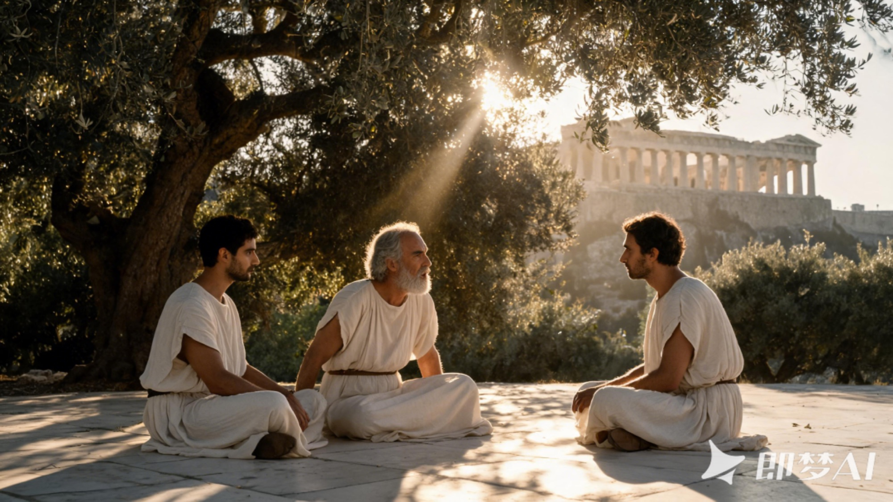
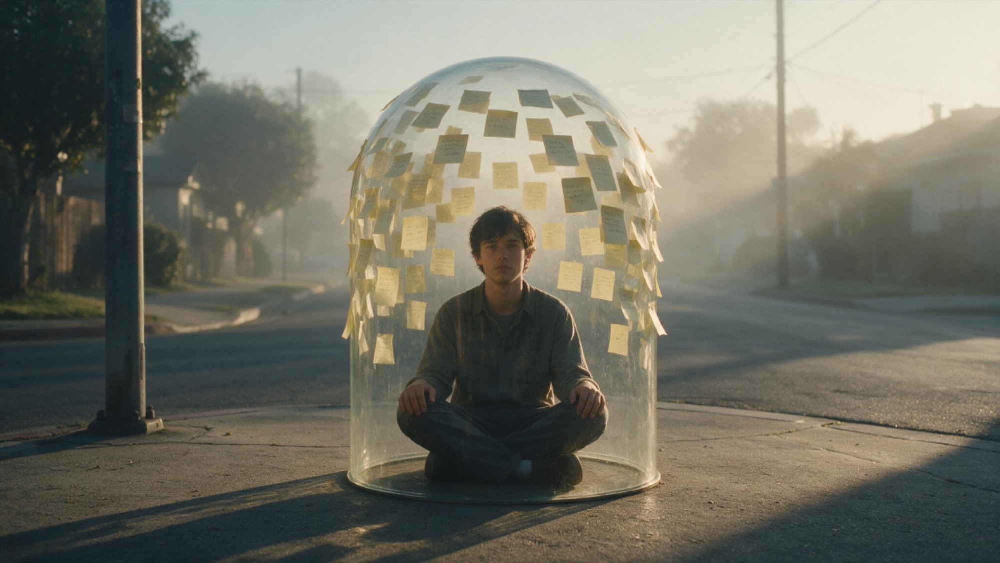
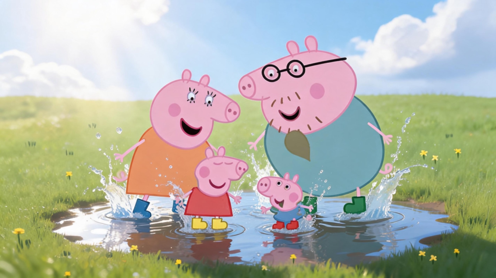
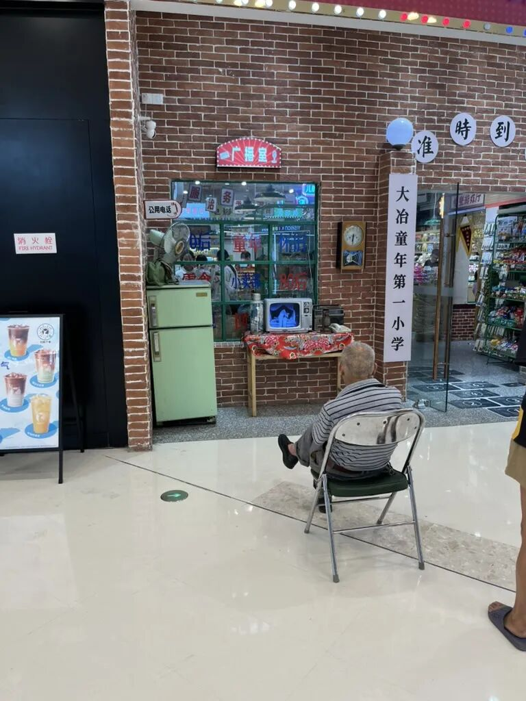
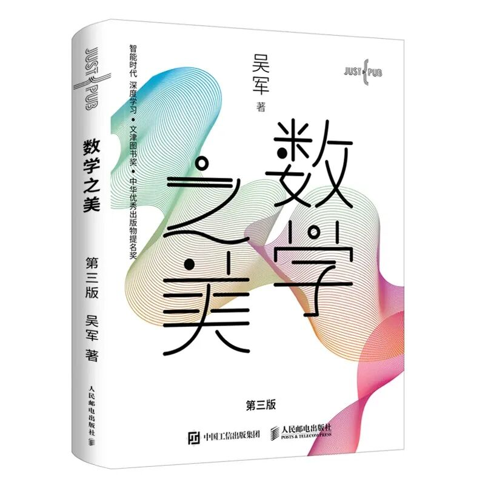

文章
25 篇 · 同步自 Obsidian
-
最稳定的铁饭碗，就是你自己：《低风险创业》阅读复盘
第二次参加龙哥的读书会，整体感受非常好。氛围和环境切身感受到，现场聚集了很多创业者，你能从中体会到创业这件事其实是可以做到的。这…
-

读了1000小时书，我才明白：读书救不了我
当时我最大的困惑是：读了那么多书，为什么依然过不好这一生？
-

早起问题反思｜《研究表明，依靠意志力改掉坏习惯是徒劳无功的》
坏问题是：我要开始早起。好问题是：我要开始早起，而且我要早起之后要做什么？
-

我没戒掉瘾，我只是换了个更上瘾的东西
读书的时候，我特别喜欢在网吧打游戏，沉浸其中，无法自拔。我是一个极其极端的人——如果一件事情对我有意义，我会极度沉迷。
-

我没戒掉瘾，我只是换了个更上瘾的东西
读书的时候，我特别喜欢在网吧打游戏，沉浸其中，无法自拔。我是一个极其极端的人——如果一件事情对我有意义，我会极度沉迷。
-

我人生第一次看见大海，却高兴不起来
过去好久了。我想谈谈我在福州平潭的GAP生活。6月份离开，截止到现在也有两个多月了，马上都三个月了。时间过得很快，我也在新的地方…
-

我与超哥的故事
6月1号，我从福州开到深圳，十几个小时全程高速。
-

青年，与苏格拉底：要听过多少道理，才能过好这一生？
苏格拉底： 来吧，你的事情我大致已听说。我不会给你那些市集上随处可得的答案。世俗答案有千千万万，但我们追的是比较本质的东西。有很…
-

随记：不是想清楚才说，是说了才能想清楚
维特根斯坦：凡是可以想象的，就是可以说的；凡是无法想象的，就是无法说的。
-

连续两场读书会复盘：能说清楚的事，才会真的发生
我最大的问题，不是没东西可说，而是想得太多、用词太抽象，反而说不出来。
-

自信、意志力、天赋...，我特别不喜欢的词汇，它在否定和遮蔽，真正需要被看到的
我想讨论一类我特别不喜欢的词——自信、意志力、坚持、天赋......
-

戒烟，身体比意志更诚实
你注意过吗？吸烟的人，在什么状态下会特别讨厌香烟？
-

我的第一本书
在我11岁那年，正值初中时期，我随父亲一起去镇上做生意。独自闲逛时，我被一家书店吸引，于是恳求父亲花了10元钱，为我购买了人生中…
-

如果要养宠物，我会养一只鸡
昨天在英语角我们谈到一个话题叫"cultivate"，培养相关的话题，培养自己、植物和动物。
-

如何获得，小猪佩奇踩水坑的快乐
很长一段时间内，我都不打算去了解佛法。上周末，一位大佬点拨了我一句话：“我从没拿起过，怎么能谈放下”。在我这个年纪就过早寻求解脱…
-

回忆：在酒店打开电视的那一刻，我回到了小时候
今天来到了泉州。住在了附近的酒店里。我特别喜欢看电视。
-
喂，你还好吗？
不时地，我莫名地陷入一种伤感的情绪中。尤其是在使用微信的漫长岁月里，我几乎未曾删除过任何好友，即使他们中的许多人，只是生命中的匆…
-

吴军的《数学之美》自然语言处理的演进，对英语学习的启示
问题不是你不努力，而是方法一开始就选错了。而且这个错误，计算机在 30 年前就已经替你踩过一遍了。
-
吃饭，睡觉。
禅宗里我最喜欢的一个公案：弟子问师傅，怎样达到开悟的境界？师傅只淡淡答了四个字——吃饭睡觉。
-

司马光砸开的缸里，躲着另一个自己
几年前，我正处于一段迷茫期，偶然搜到了这部电影。它温暖、清新，节奏像日剧一样克制。
-
为什么在地铁上，很难勤奋起来
很长一段时间内，我都不打算去了解佛法。上周末，一位大佬点拨了我一句话：“我从没拿起过，怎么能谈放下”。在我这个年纪就过早寻求解脱…
-
为什么会是深圳？
“人生的重大转向，常常不是规划出来的，而是被一次次“缘分”推着走的；但真正让你站稳的，不是缘分本身，而是你对自己选择的主权。
-

一本书，内容和装帧都可以很好看，这并不冲突。
安德烈·纪德是我最喜欢的作家之一，尤其在文学领域，几乎是我最喜欢的第一位作家。
-

当我在跑步的时候，我在想些什么<<2025年度跑步总结
我一直以为村上春树那本书叫《当我跑步的时候，我在想些什么》，实际上却是《当我谈跑步时，我谈些什么》。这本书大概是我看过最有用的跑…
-

《The Boy, the Mole, the Fox and the Horse》：去爱，也被爱。
起初是在bilibili，看完了全集动画，动画居然荣获奥斯卡大奖，立马就被故事吸引，一口气看完，意犹未尽。